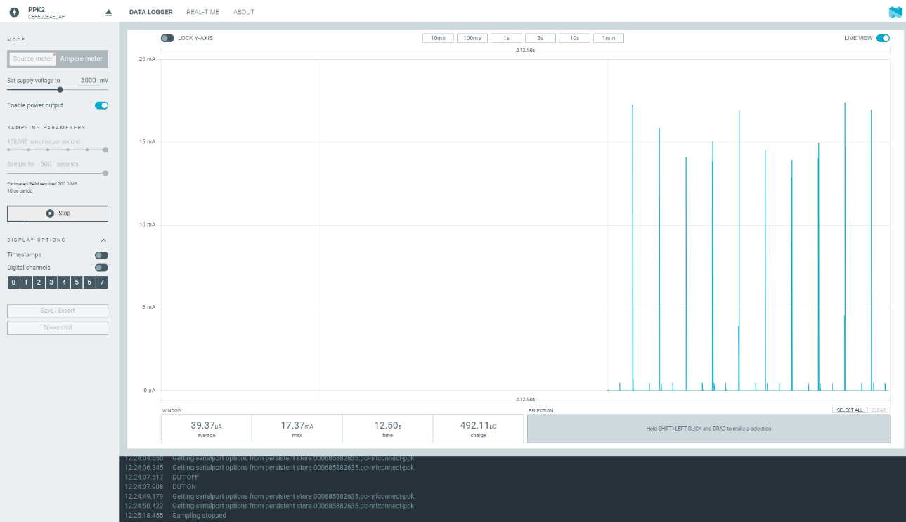
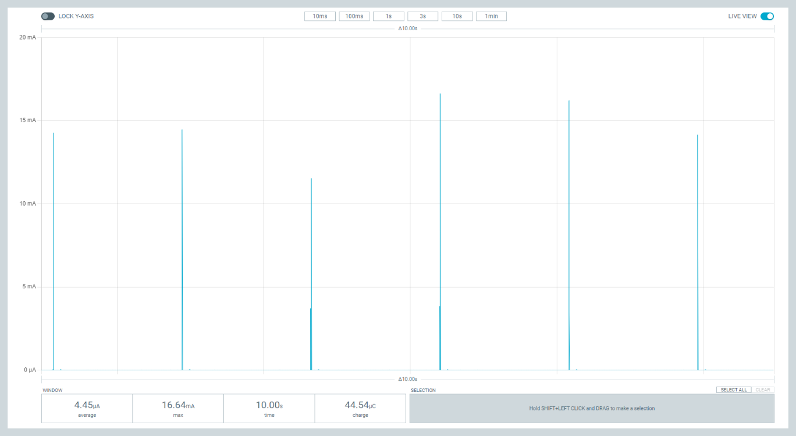

Bluetooth: Peripheral ESL
The Peripheral ESL sample acts as an ESL(Electronic Shelf Label) tag to work with ESL Access Point between a Bluetooth® LE connection and Periodic Advertising with Response synchronization. It uses Electronic Shelf Label Service (ESLS) and implement callbacks for the service.
Requirements
The sample supports the following development kits:
Hardware platforms |
PCA |
Board name |
Build target |
|---|---|---|---|
nRF52 DK |
PCA10040 |
nrf52dk_nrf52832 |
|
nRF52833 DK |
PCA10100 |
nrf52833dk_nrf52833 |
|
nRF52840 DK |
PCA10056 |
nrf52840dk_nrf52840 |
|
nRF21540 DK |
PCA10112 |
nrf21540dk_nrf52840 |
|
nRF52840 Dongle |
PCA10059 |
nrf52840dongle_nrf52840 |
|
Thingy:52 |
PCA20020 |
thingy52_nrf52832 |
|
Overview
You can use this sample as an ESL tag defined in Electronic Shelf Label Profile and Electronic Shelf Label Service to work with the ESL Access Point. This sample uses LED on DK to simulate display on ESL tag. It also contains EPD variant to demonstrate how to work with real (E-Paper display) with shield board.
The sample uses the Electronic Shelf Label Service (ESLS) library to implement the Electronic Shelf Label Service which allows electronic shelf labels (ESLs) to be controlled and updated using Bluetooth wireless technology. The sample implements callbacks for the ESL service to handle events from the ESL service. Once the Tag is associated to an AP, it stores in internal non-volatile memory relevant parameters (e.g. ESL ID, bonding / key material, etc). Such material is kept after power cycle.
User interface
The user interface of the sample depends on the hardware platform you are using.
Development kits
- LED 1:
ESL LED 1: Flashing with specified pattern when received ESL LED control OP code.
- LED 2:
ESL LED 2: Flashing with specified pattern when received ESL LED control OP code.
- LED 3:
Simulated Display: Blinks 5 times when receiving ESL display image OP code. (Deactivated when using a real display in the EPD variant)
- LED 4:
Status LED: Blinks fast (10hz) when advertising ESL service. Blinks slow (PAwR interval) when being synchronized. Stable ON when connected with Access Point.
- Button 1:
Debug button to unassociate the tag from Access Point. Remove all stored images and configured ESL addr and key materials.
Thingy:52
- RGB LED:
The RGB LED channels are used independently to display the following information:
Red channel (ESL LED) flashing when specified pattern when received ESL LED control OP code..
Green channel (Simulated Display) blinks 5 times when receiving ESL display image OP code.
Blue channel (Status LED) blinks fast (10hz) when advertising ESL service. Blinks slow (PAwR interval) when being synchronized. Stable ON when connected with Access Point.
- Button:
Debug button to unassociate the tag from Access Point. Remove all stored images and configured ESL addr and key materials including bonding keys
EPD variant
This sample uses WAVESHARE e-Paper Raw Panel Shield 7 , WAVESHARE 250x122, 2.13inch E-Ink raw display panel 8 and Zephyr out-of-box display driver ssd1675a EPD display controller 10 as reference to demonstrate how to display image on ESL.
For now, only nrf52dk_nrf52832 and nrf52833dk_nrf52833 support this optional feature.
In VS Code with nRF Extension, select prj_release.conf and select “nrf52833dk_nrf52833_power_profiler_epd.conf” as Kconfig fragments. And add -DDTC_OVERLAY_FILE="conf/nrf52833dk_nrf52833/nrf52833dk_nrf52833_release_epd.overlay" to Extra Cmake arguments.
As alternative, using terminal, to activate the optional feature supported by this sample, use the following build command:
west build -p -b nrf52833dk_nrf52833 -- -DOVERLAY_CONFIG="nrf52833dk_nrf52833_power_profiler_release_epd.conf" -DDTC_OVERLAY_FILE="conf/nrf52833dk_nrf52833/nrf52833dk_nrf52833_release_epd.overlay"
See cmake_options for instructions on how to add this option. For more information about using configuration overlay files, see zephyr:important-build-vars in the Zephyr documentation.
Note
Please refer to the original manufacturer’s documentation of the panel for selecting the shield board switch positions. For example, adjust to A0 for WAVESHARE 250x122, 2.13inch E-Ink raw display panel 8.
Note
To use EPD other than reference WAVESHARE 250x122, 2.13inch E-Ink raw display panel 8 , please use display driver provided by manafacturer.
Power Profiling variant
Power optimized overlay disables all of unnecessary peripheral to minimize power consumption. You can use power profiler overlay for nrf52833dk_nrf52833 to measure current. In VS Code with nRF Extension, select prj_release.conf and select “nrf52833dk_nrf52833_power_profiler_release_led.conf” as Kconfig fragments. As alternative, using terminal, use the following build command:
west build -p -b nrf52833dk_nrf52833 -- -DCONF_FILE=prj_release.conf -DOVERLAY_CONFIG="nrf52833dk_nrf52833_power_profiler_release_led.conf" -DDTC_OVERLAY_FILE="conf/nrf52833dk_nrf52833/nrf52833dk_nrf52833_power_profiler_release.overlay"
Note
Due to limitation of ssd16xx EPD display driver 11 , user needs to modify the driver to make it able to re-initialize the display controller run-time. Please modify the file zephyr/drivers/display/ssd16xx/ssd16xx.c: from static int ssd16xx_init(const struct device *dev) to int ssd16xx_init(const struct device *dev).
Please follow Power Consumption Measurement to measure currents.
Power Consumption Measurement
Prerequisite: Read Power optimization and get Power Profiler Kit II (PPK2) 5
Build and program the Tag (nRF52833DK) Power Profiling configuration by following Building and running and Power Profiling variant
Follow Preparing a DK for current measurement 9 to prepare 52833DK for Power Consumption measurements
Cut SB40.
Connect VOUT of PPK2 to nRF current Measurement on DK, connect GND of PPK2 to External supply negative polarity pin (-). By doing so, PPK2 will provide power to only the nRF52 SoC.
Connect the PPK2 (powered ON) in “Source Meter” mode to the nrf52833dk_nrf52833 (turned ON) and enable power output 3000mV on the Power Profiler GUI and start measurement. Power the rest of the ESL Tag DevKit via USB (same as programming USB port), and keep the DevKit turned ON.
If previously associated to the AP, wait the nrf52833dk_nrf52833 to get synched. LED 4 on the ESL Tag should be blinking slowly (PAwR interval); otherwise follow the instructions above to associate the Tag to an AP and to test basic functionalities.
Measure nRF52833 current while synchronized
On nrf52833dk_nrf52833, set the SW6 switch to “nRF Only”. This will further isolate the nRF52 from some DK components wich may be causes of leakages(i.e. Interface MCU, LED and Buttons). LEDs will stop blinking.
Current consumption should now be less than 5uA.

Once completed this procedure (i.e. if you don’t need to use the PPK2 and you want to power the ESL Tag DevKit from the same USB port as used for programming), put Jumper back on SB40.
Configuration options
Check and configure the following Kconfig options:
BT_ESL_SECURITY_ENABLED
This enables BT SMP and bonding which are security requirement of ESL Profile. Disable BLE security of the ESL service for debugging purposes.
ESL_SIMULATE_DISPLAY
This enable simulated display feature which uses LED 2 on DK to simulate E-Paper display. DK will blinks few times times(
CONFIG_ESL_SIMULATE_DISPLAY_BLINK_TIMES+ Image index from Display Control OPcode) when receiving valid Display Control OPcode. This could be useful for those developers without real E-Paper display.
ESL_SIMULATE_DISPLAY_BLINK_TIMES
This configuration option specifies how many basic times to blink when receiving Display Control OPcode with
CONFIG_ESL_SIMULATE_DISPLAYenabled.
BT_ESL_PTS
Enable PTS feature. With this feature ESL Tag will uses static BLE address. This feature is used for PTS test only.
ESL_SHIPPING_MODE
This enables shipping mode feature. With this feature ESL Tag will enter system off mode right after everytime power cycle which keeps ESL Tag in very low power consumption. The ESL Tag could be waken up by selected method, e.g. NFC, button.
ESL_SHIPPING_WAKE_BY_NFC
This enables feature to wake up the ESL Tag by NFC. This feature could cooperate with
CONFIG_ESL_SHIPPING_MODEto provide a way to wake the ESL Tag up.
ESL_SHIPPING_WAKE_BY_BUTTON
This enables feature to wake up the ESL Tag by button. This feature could cooperate with
CONFIG_ESL_SHIPPING_MODEto provide a way to wake the ESL Tag up.
ESL_SHIPPING_WAKE_BY_BOTH
This enables featrue to wake up the ESL Tag by both NFC and button. This feature could cooperate with
CONFIG_ESL_SHIPPING_MODEto provide a way to wake the ESL Tag up.
ESL_NFC_SUPPORT
Enable NFC feature. With this feature NFC Tag will add BLE address when unassociated, or ESL address when associated. User could use NFC card read to read information from NFC antenna. This feature could cooperate with
CONFIG_ESL_SHIPPING_MODEto provide a way to wake the ESL Tag up.
Building and running
To build the sample with Visual Studio Code, follow the steps listed on the How to build an application 3 page in the nRF Connect for VS Code extension documentation. See Building and programming an application for other building and programming scenarios and Testing and debugging an application for general information about testing and debugging in the nRF Connect SDK.
Testing
After programming the sample to your development kit, you can test it in combination with a nRF5340 DevKit running the ESL Access Point (Bluetooth: Central ESL) by performing the following steps:
Turn on the ESL Tag power.
Optionally, Push Button 1 to erase possible previous stored parameters and start from scratch.
Connect to the kit that runs this sample with a terminal emulator (for example, PuTTY or the Serial Terminal in nRF Connect for Desktop). Connect with the following settings:
Baud rate: 115200
8 data bits
1 stop bit
No parity
HW flow control: None
Note
To know if the right port is selected, enter new line and “ESL_TAG:~$” should show up.
Optionally, you can display debug messages. ESL Shell command on UART console could be used to debug.
Observe that LED 4 is blinking with 10hz frequency and the device is advertising with the ESL UUID (
0x1857). The Tag is ready for being associated by an ESL AP.Use the ESL Access Point( Bluetooth: Central ESL) on the other DK nRF5340 DK 6 to connect to the ESL tag and configure mandatory characteristic by: #. Using the automatic onboarding feature in the ESL Access Point. #. Using the shell commands in the ESL Access Point. Observe that LED 4 is on while connected to the Access Point.
After ESL Tag is being configured with mandatory characteristic and receives PAST (Periodic Advertising Sync Transfer) from the Access Point, the ESL device disconnects the connection. Observe that LED 4 is off for a short time and then. LED 4 starts blinking with PAwR (Periodic Advertising with Responses) interval which set by ESL Access Point, signaling that the ESL Tag has been associated and it is now synchronized to the AP.
Use the AP User interface to send command to the ESL TAG: a. You can use Central ESL subcommands or, b. if auto onboarding feature has been already activated on the AP to assoicate the tag, you can try to:
Flash an LED: Push Button 4 on the AP; Observes that LED 1 on the Tag is now flashing with specified pattern.
Change ESL Display Image: push Button 3 on the AP; Observe that LED 3 on the Tag is now blinking 5 times to simulate image changed. If EPD is enabled, observe new image displayed on the EPD.
Use AP shell command interface to send a predefined ESL Sync Packet: | example: send sync packet type 0x7 (broadcast command to display image 0) to Group 0:
esl_c pawr update_pawr 7 0
FOTA update
You can configure Firmware Over-The-Air (FOTA) upgrade to replace the applications. Please see fota_updates 1 for background detail.
Requirements for FOTA
To test Firmware Over-The-Air (FOTA), you need an Android or iOS device with the nRF Connect Device Manager 4 app installed.
Hardware requirements for external flash memory DFU
To enable the external flash DFU, you need an additional flash memory shield. This sample uses WAVESHARE e-Paper Raw Panel Shield(B) as EPD and flash shield board which has MX25R6435F as the SPI NOR Flash. See the following table for the pin definitions.
Arduino pin |
SPI NOR Flash pin |
|---|---|
D13 |
SCK |
D12 |
MISO |
D11 |
MOSI |
D6 |
CS |
D8 |
Reset |
Enabling FOTA upgrade
We provides sample kconfig and dts overlay how to enable FOTA.
samples\peripheral_esl\conf\nrf52833dk_nrf52833\child_image\mcuboot\boards\nrf52833dk_nrf52833.conf demonstrates how to set Kconfig in bootloader 2 to use external flash.
samples\peripheral_esl\conf\nrf52833dk_nrf52833\child_image\mcuboot\boards\nrf52833dk_nrf52833.overlay demonstrates how to set devicetree in bootloader 2 to use external flash.
samples\peripheral_esl\conf\nrf52833dk_nrf52833\nrf52833dk_nrf52833_b2in13_epd.conf demonstrates how to set kconfig to enable bootloader 2 and use external flash as secondary slot in application.
samples\peripheral_esl\conf\nrf52833dk_nrf52833\nrf52833dk_nrf52833_b2in13_epd.overlay demonstrates how to set devicetree to use external flash.
- For windows uses the following command.
west build -p -b nrf52833dk_nrf52833 -- -DOVERLAY_CONFIG="nrf52833dk_nrf52833_b2in13_epd.conf" -DDTC_OVERLAY_FILE="conf/nrf52833dk_nrf52833/nrf52833dk_nrf52833_b2in13_epd.overlay" -Dmcuboot_DTS_ROOT=%CD%- For linux uses the following command.
west build -p -b nrf52833dk_nrf52833 -- -DOVERLAY_CONFIG="nrf52833dk_nrf52833_b2in13_epd.conf" -DDTC_OVERLAY_FILE="conf/nrf52833dk_nrf52833/nrf52833dk_nrf52833_b2in13_epd.overlay" -Dmcuboot_DTS_ROOT=$PWD
Dependencies
This sample uses the following nRF Connect SDK libraries:
In addition, it uses the following Zephyr libraries:
include/zephyr/types.hboards/arm/nrf*/board.h-
include/kernel.h
-
include/bluetooth/bluetooth.hinclude/bluetooth/gatt.hinclude/bluetooth/hci.hinclude/bluetooth/uuid.h
References
- 1
- 2(1,2,3)
- 3
https://nrfconnect.github.io/vscode-nrf-connect/get_started/build_app_ncs.html
- 4
https://www.nordicsemi.com/Products/Development-tools/nrf-connect-device-manager
- 5
https://infocenter.nordicsemi.com/topic/ug_ppk2/UG/ppk/PPK_user_guide_Intro.html
- 6
https://www.nordicsemi.com/Software-and-Tools/Development-Kits/nRF5340-DK
- 7
- 8(1,2,3)
- 9
https://infocenter.nordicsemi.com/topic/ug_nrf52833_dk/UG/dk/prepare_board.html
- 10
- 11
https://github.com/zephyrproject-rtos/zephyr/blob/main/drivers/display/ssd16xx.c